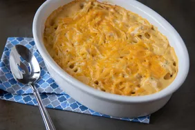

Chicken Tetrazzini

This Chicken Tetrazzini recipe is easy, creamy, cheesy, delicious and loved by all! Classic comfort, make-ahead meal, and freezer-friendly.
Ingredients
10 ounce can cream of chicken soup
10 ounce can cream of mushroom soup
300 cups sour cream
1/2 cup butter , melted
1/2 cup low-sodium chicken broth
1 teaspoon salt
1/2 teaspoon pepper
1/4 teaspoon garlic powder
1/4 teaspoon garlic powder
1 pound seasoned cooked chicken , chopped or shredded
1 pound seasoned cooked chicken , chopped or shredded
1 pound thin spaghetti , cooked al dente
1 1/2 cups shredded mozzarella cheese
1/2 cup shredded cheddar cheese
2 tablespoons grated Parmesan cheese
Fresh chopped parsley , for garnish
Instructions
- Preheat oven to 350 degrees F. Coat a 9×13 baking dish with nonstick cooking spray, set aside.
- In large bowl whisk together both soups, sour cream, butter, chicken broth, salt, pepper, and garlic powder until combined.
- Stir in the peas, chicken, and spaghetti; toss to combine until fully coated.
- Pour mixture into the prepared baking dish and sprinkle with the cheeses.
- Cover with foil and bake for 30 minutes, then remove foil and continue baking for another 15 minutes until cheese is melted and casserole is hot throughout.
- Remove from oven and sprinkle with parsley. Let stand 5-10 minutes.
- Remove from oven and sprinkle with parsley. Let stand 5-10 minutes.